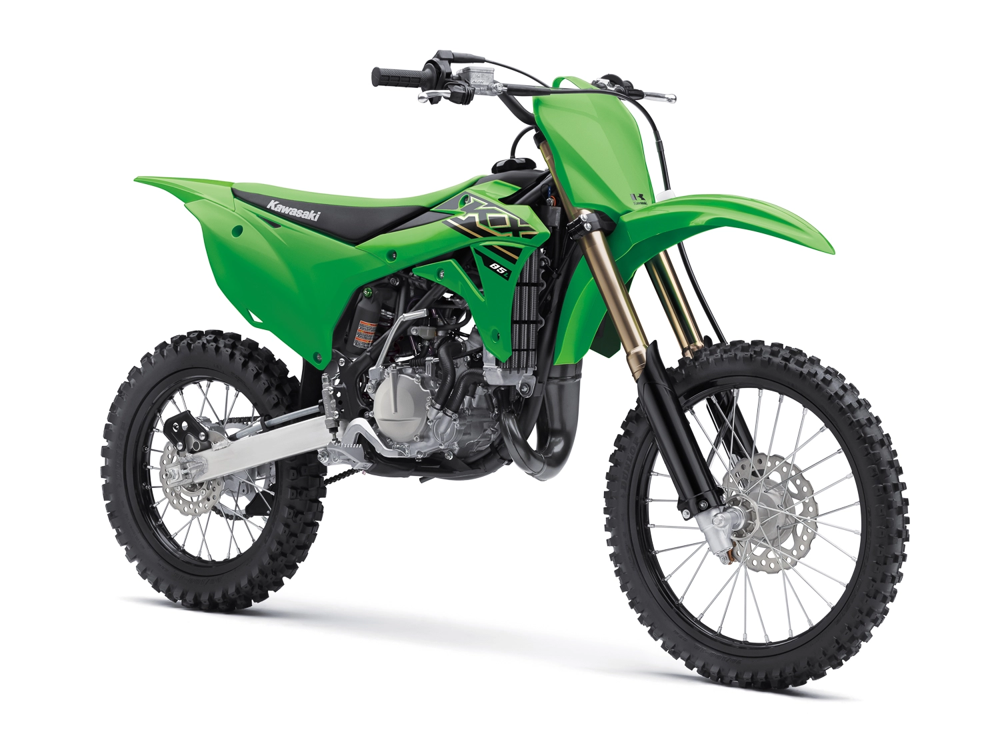

KX85 motorcycles bring Kawasaki’s proven performance to the amateur ranks. Proportionate power of the 84cc engine and race-ready technology grant young racers the championship-winning advantage they need to sharpen their skills. With a high performing engine and race ready suspension, adjustable handlebar positioning and slim bodywork, the KX85 is the bike to beat!
